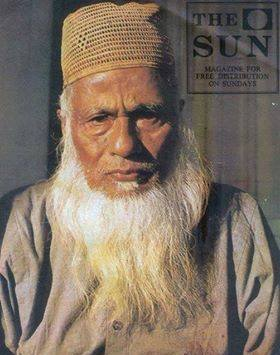

About Mawlana Abdul Hamid Khan Bhashani
Mawlana Abdul Hamid Khan Bhashani was a visionary leader, a champion of the poor, and a relentless fighter for justice. Known as “The Red Maulana,” he dedicated his life to uplifting the oppressed, founding movements for equality. His legacy of courage, humility, and compassion continues to inspire and guide us.
Life and Achievements
- Founded the Awami Muslim League (1949): which later became the Awami League, a major political force in Bangladesh’s independence.
- Led the historic 1969 Mass Uprising: a movement pivotal in pressuring West Pakistan’s government, laying groundwork for independence.
- Established the Peasants’ and Workers’ Party giving political voice and representation to marginalized groups across Bangladesh.